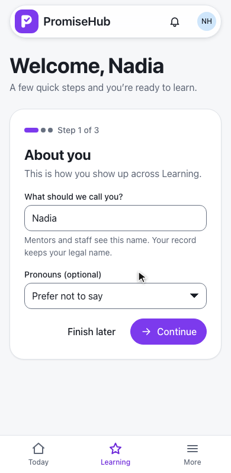
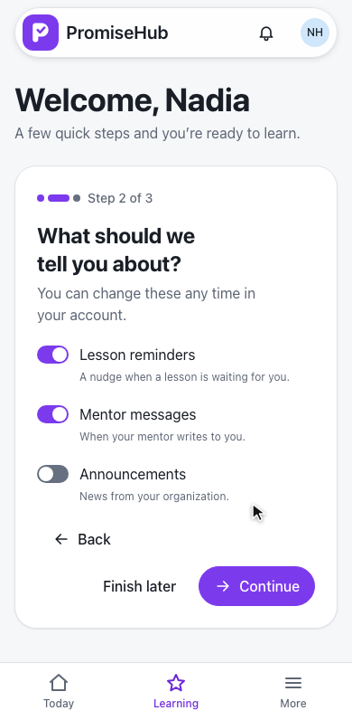
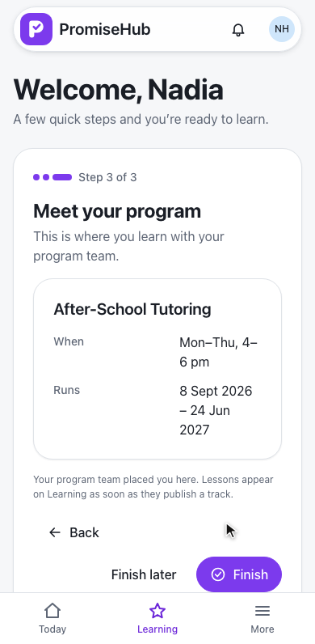
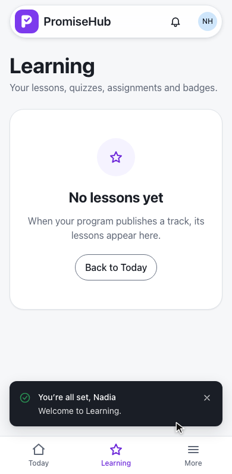
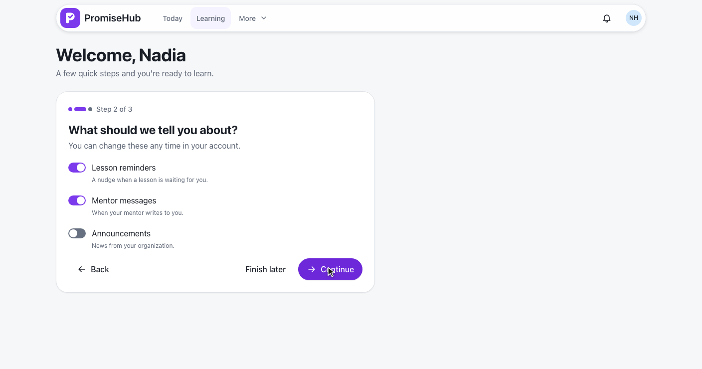
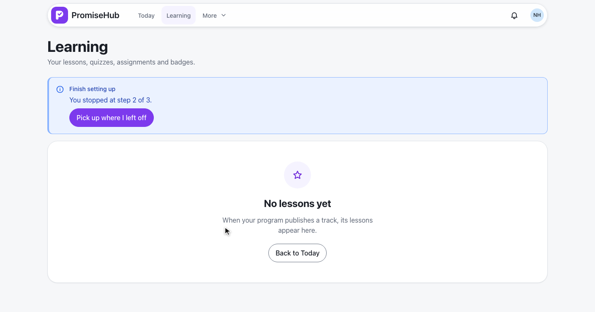
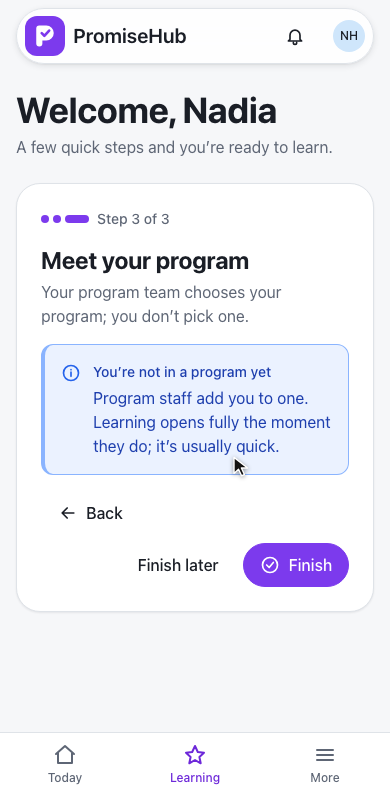
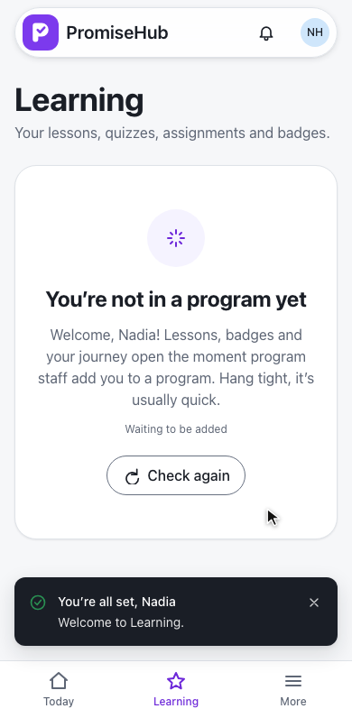

PromiseHub · Video 53
Complete first-run onboarding
Three steps saved on the server, a way to resume, and a waiting state before placement
Three steps saved on the server, a way to resume, and a waiting state before placement
GET /learning/onboarding → not-started, so Learning opens /learning/welcome.



PUT /learning/onboarding · one YouthOnboarding row per youth membership

POST /learning/onboarding/complete → 204
Audited as Completed on YouthOnboarding
Learning never opens setup again
422 field by field; a 500 keeps the answers.
| Sent | Answer |
|---|---|
| Blank name | 422 “Tell us what to call you.” |
| Over 60 characters | 422 “Use 60 characters or fewer.” |
| Pronouns outside she/her, he/him, they/them | 422 “Choose pronouns from the list.” |
| Step outside 1 to 3 | 422, nothing saved |
Saved at step 2; Learning offers to pick up there.


Waiting note, waiting state, then placed.


GET /learning/lessons → 403 no-cohort · RequirePlacement() · ADR 0047
| Caller | Answer |
|---|---|
| Youth under the consent age, no consent | 403 consent-required, first |
| Youth in no program | 403 no-cohort on lessons |
| Learning off | 404; the welcome redirects to Today |
| Staff, mentor, volunteer | 403 |
YouthOnboardingTests: defaults, saving, validation, finishing and audit, consent, module, roles, another organizationNoCohortTests: no-cohort, enrolled, ended and archived, consent first, own organization onlyyouth-welcome, resume-setup, no-cohort specs on phone and laptop, with axe
Next: youth complete lessons